Knowles 2019 data
ERM
2023-06-30
Last updated: 2023-06-30
Checks: 7 0
Knit directory: Cardiotoxicity/
This reproducible R Markdown analysis was created with workflowr (version 1.7.0). The Checks tab describes the reproducibility checks that were applied when the results were created. The Past versions tab lists the development history.
Great! Since the R Markdown file has been committed to the Git repository, you know the exact version of the code that produced these results.
Great job! The global environment was empty. Objects defined in the global environment can affect the analysis in your R Markdown file in unknown ways. For reproduciblity it’s best to always run the code in an empty environment.
The command set.seed(20230109) was run prior to running
the code in the R Markdown file. Setting a seed ensures that any results
that rely on randomness, e.g. subsampling or permutations, are
reproducible.
Great job! Recording the operating system, R version, and package versions is critical for reproducibility.
Nice! There were no cached chunks for this analysis, so you can be confident that you successfully produced the results during this run.
Great job! Using relative paths to the files within your workflowr project makes it easier to run your code on other machines.
Great! You are using Git for version control. Tracking code development and connecting the code version to the results is critical for reproducibility.
The results in this page were generated with repository version ace4a80. See the Past versions tab to see a history of the changes made to the R Markdown and HTML files.
Note that you need to be careful to ensure that all relevant files for
the analysis have been committed to Git prior to generating the results
(you can use wflow_publish or
wflow_git_commit). workflowr only checks the R Markdown
file, but you know if there are other scripts or data files that it
depends on. Below is the status of the Git repository when the results
were generated:
Ignored files:
Ignored: .RData
Ignored: .Rhistory
Ignored: .Rproj.user/
Ignored: analysis/figure/
Ignored: data/41588_2018_171_MOESM3_ESMeQTL_ST2_for paper.csv
Ignored: data/Arr_GWAS.txt
Ignored: data/Arr_geneset.RDS
Ignored: data/BC_cell_lines.csv
Ignored: data/CADGWASgene_table.csv
Ignored: data/CAD_geneset.RDS
Ignored: data/Clamp_Summary.csv
Ignored: data/Cormotif_24_k1-5_raw.RDS
Ignored: data/DAgostres24.RDS
Ignored: data/DAtable1.csv
Ignored: data/DDEMresp_list.csv
Ignored: data/DDE_reQTL.txt
Ignored: data/DDEresp_list.csv
Ignored: data/DEG-GO/
Ignored: data/DEG_cormotif.RDS
Ignored: data/DF_Plate_Peak.csv
Ignored: data/DRC48hoursdata.csv
Ignored: data/Da24counts.txt
Ignored: data/Dx24counts.txt
Ignored: data/Dx_reQTL_specific.txt
Ignored: data/Ep24counts.txt
Ignored: data/GOIsig.csv
Ignored: data/GOplots.R
Ignored: data/GTEX_setsimple.csv
Ignored: data/GTEX_sig24.RDS
Ignored: data/GTEx_gene_list.csv
Ignored: data/HFGWASgene_table.csv
Ignored: data/HF_geneset.RDS
Ignored: data/Heart_Left_Ventricle.v8.egenes.txt
Ignored: data/Hf_GWAS.txt
Ignored: data/K_cluster
Ignored: data/K_cluster_kisthree.csv
Ignored: data/K_cluster_kistwo.csv
Ignored: data/LD50_05via.csv
Ignored: data/LDH48hoursdata.csv
Ignored: data/Mt24counts.txt
Ignored: data/NoRespDEG_final.csv
Ignored: data/RINsamplelist.txt
Ignored: data/Seonane2019supp1.txt
Ignored: data/TMMnormed_x.RDS
Ignored: data/TOP2Bi-24hoursGO_analysis.csv
Ignored: data/TR24counts.txt
Ignored: data/Top2biresp_cluster24h.csv
Ignored: data/Viabilitylistfull.csv
Ignored: data/allexpressedgenes.txt
Ignored: data/allgenes.txt
Ignored: data/allmatrix.RDS
Ignored: data/allmymatrix.RDS
Ignored: data/annotation_data_frame.RDS
Ignored: data/averageviabilitytable.RDS
Ignored: data/avgLD50.RDS
Ignored: data/backGL.txt
Ignored: data/cormotif_3hk1-8.RDS
Ignored: data/cormotif_initalK5.RDS
Ignored: data/cormotif_initialK5.RDS
Ignored: data/cormotif_initialall.RDS
Ignored: data/counts24hours.RDS
Ignored: data/cpmcount.RDS
Ignored: data/cpmnorm_counts.csv
Ignored: data/crispr_genes.csv
Ignored: data/ctnnt_results.txt
Ignored: data/cvd_GWAS.txt
Ignored: data/dat_cpm.RDS
Ignored: data/data_outline.txt
Ignored: data/efit2.RDS
Ignored: data/efit2_final.RDS
Ignored: data/efit2results.RDS
Ignored: data/ensembl_backup.RDS
Ignored: data/ensgtotal.txt
Ignored: data/filcpm_counts.RDS
Ignored: data/filenameonly.txt
Ignored: data/filtered_cpm_counts.csv
Ignored: data/filtered_raw_counts.csv
Ignored: data/filtermatrix_x.RDS
Ignored: data/folder_05top/
Ignored: data/geneDoxonlyQTL.csv
Ignored: data/gene_corr_df.RDS
Ignored: data/gene_corr_frame.RDS
Ignored: data/gene_prob_tran3h.RDS
Ignored: data/gene_probabilityk5.RDS
Ignored: data/gostresTop2bi_ER.RDS
Ignored: data/gostresTop2bi_LR
Ignored: data/gostresTop2bi_LR.RDS
Ignored: data/gostresTop2bi_TI.RDS
Ignored: data/gostrescoNR
Ignored: data/gtex/
Ignored: data/heartgenes.csv
Ignored: data/individualDRCfile.RDS
Ignored: data/individual_DRC48.RDS
Ignored: data/individual_LDH48.RDS
Ignored: data/kegglistDEG.RDS
Ignored: data/knowfig4.csv
Ignored: data/knowfig5.csv
Ignored: data/label_list.RDS
Ignored: data/ld50_table.csv
Ignored: data/mymatrix.RDS
Ignored: data/nonresponse_cluster24h.csv
Ignored: data/norm_LDH.csv
Ignored: data/norm_counts.csv
Ignored: data/old_sets/
Ignored: data/plan2plot.png
Ignored: data/raw_counts.csv
Ignored: data/response_cluster24h.csv
Ignored: data/sigVDA24.txt
Ignored: data/sigVDA3.txt
Ignored: data/sigVDX24.txt
Ignored: data/sigVDX3.txt
Ignored: data/sigVEP24.txt
Ignored: data/sigVEP3.txt
Ignored: data/sigVMT24.txt
Ignored: data/sigVMT3.txt
Ignored: data/sigVTR24.txt
Ignored: data/sigVTR3.txt
Ignored: data/siglist.RDS
Ignored: data/siglist_final.RDS
Ignored: data/siglist_old.RDS
Ignored: data/slope_table.csv
Ignored: data/supp_normLDH48.RDS
Ignored: data/supp_pca_all_anno.RDS
Ignored: data/table3a.omar
Ignored: data/toplistall.RDS
Ignored: data/tvl24hour.txt
Ignored: data/tvl24hourw.txt
Ignored: data/venn_code.R
Ignored: data/viability.RDS
Untracked files:
Untracked: .RDataTmp
Untracked: .RDataTmp1
Untracked: .RDataTmp2
Untracked: OmicNavigator_learn.R
Untracked: analysis/Figure9.Rmd
Untracked: code/DRC_plotfigure1.png
Untracked: code/cpm_boxplot.R
Untracked: code/extracting_ggplot_data.R
Untracked: code/fig1plot.png
Untracked: code/figurelegeddrc.png
Untracked: cormotif_probability_genelist.csv
Untracked: individual-legenddark2.png
Untracked: installed_old.rda
Untracked: motif_ER.txt
Untracked: motif_LR.txt
Untracked: motif_NR.txt
Untracked: motif_TI.txt
Untracked: output/DNRvenn.RDS
Untracked: output/DOXvenn.RDS
Untracked: output/EPIvenn.RDS
Untracked: output/MTXvenn.RDS
Untracked: output/Volcanoplot_10
Untracked: output/Volcanoplot_10.RDS
Untracked: output/allfinal_sup10.RDS
Untracked: output/motif_ERrep.RDS
Untracked: output/motif_LRrep.RDS
Untracked: output/motif_NRrep.RDS
Untracked: output/motif_TI_rep.RDS
Untracked: output/output-old/
Untracked: output/supplementary_motif_list_GO.RDS
Untracked: output/toptablebydrug.RDS
Untracked: output/x_counts.RDS
Untracked: reneebasecode.R
Unstaged changes:
Modified: Cardiotoxicity.Rproj
Modified: analysis/Figure1.Rmd
Modified: analysis/GTEx_genes.Rmd
Modified: analysis/Supplementary_figures.Rmd
Modified: analysis/run_all_analysis.Rmd
Modified: output/DNRmeSNPs.RDS
Modified: output/DNRreQTLs.RDS
Modified: output/DOXmeSNPs.RDS
Modified: output/DOXreQTLs.RDS
Modified: output/EPImeSNPs.RDS
Modified: output/EPIreQTLs.RDS
Modified: output/MTXmeSNPs.RDS
Modified: output/MTXreQTLs.RDS
Note that any generated files, e.g. HTML, png, CSS, etc., are not included in this status report because it is ok for generated content to have uncommitted changes.
These are the previous versions of the repository in which changes were
made to the R Markdown (analysis/Knowles2019.Rmd) and HTML
(docs/Knowles2019.html) files. If you’ve configured a
remote Git repository (see ?wflow_git_remote), click on the
hyperlinks in the table below to view the files as they were in that
past version.
| File | Version | Author | Date | Message |
|---|---|---|---|---|
| Rmd | ace4a80 | reneeisnowhere | 2023-06-30 | updated with final counts |
| Rmd | f4bd5e1 | reneeisnowhere | 2023-06-27 | checking code changes overtime |
| html | a9c79b1 | reneeisnowhere | 2023-06-26 | Build site. |
| Rmd | 982e608 | reneeisnowhere | 2023-06-26 | updated Epi and found the sig bug from friday |
| html | c134a42 | reneeisnowhere | 2023-06-22 | Build site. |
| Rmd | 001d509 | reneeisnowhere | 2023-06-22 | update plots and go anlysis |
| html | 477bec8 | reneeisnowhere | 2023-06-21 | Build site. |
| Rmd | 347bf4c | reneeisnowhere | 2023-06-21 | adding in Doxspecific to graph |
| html | 7749676 | reneeisnowhere | 2023-06-20 | Build site. |
| Rmd | c26c27b | reneeisnowhere | 2023-06-20 | updating titles on graphs |
| html | a77fd98 | reneeisnowhere | 2023-06-20 | Build site. |
| Rmd | 4c762a8 | reneeisnowhere | 2023-06-20 | adding Dox specific investigation |
| Rmd | e94e8f2 | reneeisnowhere | 2023-06-19 | new code from Monday |
| html | 124e036 | reneeisnowhere | 2023-06-16 | Build site. |
| Rmd | fd4fe27 | reneeisnowhere | 2023-06-16 | fix spelling |
| html | d6ad3fe | reneeisnowhere | 2023-06-16 | Build site. |
| Rmd | 4191e24 | reneeisnowhere | 2023-06-16 | adding lcpm plots for dox spec |
| html | bd0e45f | reneeisnowhere | 2023-06-15 | Build site. |
| Rmd | af93421 | reneeisnowhere | 2023-06-15 | adding in seperate files |
| Rmd | 1a1a034 | reneeisnowhere | 2023-06-15 | updates galore |
| Rmd | f8f511a | reneeisnowhere | 2023-06-15 | updates and simplifications of code |
| Rmd | 7fc7ec7 | reneeisnowhere | 2023-06-14 | updating code |
package loading
function load
Knowles data
The code below is how I wrangled the knowles supplemental lists into entrezgene_ids to overlap with my expressed gene lists
Enrichment of Pairwise
backGL <- read.csv("data/backGL.txt")
drug_palNoVeh <- c("#8B006D","#DF707E","#F1B72B", "#3386DD","#707031")
drug_palc <- c("#8B006D","#DF707E","#F1B72B", "#3386DD","#707031","#41B333")
time <- rep((rep(c("3h", "24h"), c(6,6))), 6)
time <- ordered(time, levels =c("3h", "24h"))
drug <- rep(c("Daunorubicin","Doxorubicin","Epirubicin","Mitoxantrone","Trastuzumab", "Vehicle"),12)
mat_drug <- c("Daunorubicin","Doxorubicin","Epirubicin","Mitoxantrone")
indv <- as.factor(rep(c(1,2,3,4,5,6), c(12,12,12,12,12,12)))
labeltop <- (interaction(substring(drug, 0, 2), indv, time))
level_order2 <- c('75','87','77','79','78','71')
toplistall <- readRDS("data/toplistall.RDS")
knowles4 <-readRDS("output/knowles4.RDS")
knowles5 <-readRDS("output/knowles5.RDS")
DOXmeSNPs <- readRDS("output/DOXmeSNPs.RDS")
DOXreQTLs <- readRDS("output/DOXreQTLs.RDS")
DNRmeSNPs <- readRDS("output/DNRmeSNPs.RDS")
DNRreQTLs <- readRDS("output/DNRreQTLs.RDS")
EPImeSNPs <- readRDS("output/EPImeSNPs.RDS")
EPIreQTLs <- readRDS("output/EPIreQTLs.RDS")
MTXmeSNPs <- readRDS("output/MTXmeSNPs.RDS")
MTXreQTLs <- readRDS("output/MTXreQTLs.RDS")
toplist24hr <- toplistall %>%
mutate(id = as.factor(id)) %>%
mutate(time=factor(time, levels=c("3_hours","24_hours"))) %>%
filter(time=="24_hours")
toplist3hr <- toplistall %>%
mutate(id = as.factor(id)) %>%
mutate(time=factor(time, levels=c("3_hours","24_hours"))) %>%
filter(time=="3_hours")Determining the genetic basis of anthracycline-cardiotoxicity by
molecular response QTL mapping in induced cardiomyocytes
David A Knowles, Courtney K Burrows†, John D Blischak, Kristen M
Patterson, Daniel J Serie, Nadine Norton, Carole Ober, Jonathan K
Pritchard, Yoav Gilad
Knowles \(~~et~ al.~\) eLife 2018;7:e33480. DOI: https://doi.org/10.7554/eLife.33480
My first question was about transcriptional response at the 24 hour mark with my treatments. 3 hour RNA-seq had low numbers of DEGs,so my initial focus is at 24 hours. This time also happens to be when the Knowles paper collected their RNA-seq data.
Supplementary 4 contains a list of 518 SNPs within 1 Mb of TSS, which had a detectable marginal effect on expression (5% FDR). When converted from ensembl gene id to entrez gene id, my list of genes for this supplement = 521. I will call these meSNPS for marginal effect QTLs.
Supplementary 5 contains a list of 376 response eQTLs (reQTLs). These are variants that were associated with modulation of transcriptomic response to doxorubicin treatment. After database name conversion, I have 377 genes.
meSNPdf <- toplistall %>%
mutate(id = as.factor(id)) %>%
mutate(time=factor(time, levels=c("3_hours","24_hours"))) %>%
mutate(sigcount = if_else(adj.P.Val < 0.05,'sig','notsig'))%>%
mutate(meSNP = if_else( ENTREZID %in% knowles4$entrezgene_id, "y" , "no")) %>%
dplyr::select(ENTREZID,id,time,meSNP,sigcount) %>%
group_by(id,time,meSNP,sigcount) %>%
tally() %>%
pivot_wider(id_cols = c(id,time,sigcount), names_from = meSNP,names_glue = "meSNP_{meSNP}", values_from = n)
meSNPdf %>%
kable(., caption= "Number of genes from minimally expressed SNPs found in DEGs (sig and nonsig) broken down by drug,time, and significance") %>%
kable_paper("striped", full_width = FALSE) %>%
kable_styling(full_width = FALSE, position = "left",bootstrap_options = c("striped"),font_size = 18) %>%
scroll_box(width = "80%", height = "400px")| id | time | sigcount | meSNP_no | meSNP_y |
|---|---|---|---|---|
| Daunorubicin | 3_hours | notsig | 13055 | 497 |
| Daunorubicin | 3_hours | sig | 526 | 6 |
| Daunorubicin | 24_hours | notsig | 6772 | 295 |
| Daunorubicin | 24_hours | sig | 6809 | 208 |
| Doxorubicin | 3_hours | notsig | 13562 | 503 |
| Doxorubicin | 3_hours | sig | 19 | NA |
| Doxorubicin | 24_hours | notsig | 7122 | 317 |
| Doxorubicin | 24_hours | sig | 6459 | 186 |
| Epirubicin | 3_hours | notsig | 13375 | 499 |
| Epirubicin | 3_hours | sig | 206 | 4 |
| Epirubicin | 24_hours | notsig | 7426 | 330 |
| Epirubicin | 24_hours | sig | 6155 | 173 |
| Mitoxantrone | 3_hours | notsig | 13508 | 501 |
| Mitoxantrone | 3_hours | sig | 73 | 2 |
| Mitoxantrone | 24_hours | notsig | 12491 | 478 |
| Mitoxantrone | 24_hours | sig | 1090 | 25 |
| Trastuzumab | 3_hours | notsig | 13581 | 503 |
| Trastuzumab | 24_hours | notsig | 13581 | 503 |
reQTLdf <- toplistall %>%
mutate(id = as.factor(id)) %>%
mutate(time=factor(time, levels=c("3_hours","24_hours"))) %>%
mutate(sigcount = if_else(adj.P.Val < 0.05,'sig','notsig'))%>%
mutate(reQTL = if_else( ENTREZID %in% knowles5$entrezgene_id, "y" , "no")) %>%
dplyr::select(ENTREZID,id,time,reQTL,sigcount) %>%
group_by(id,time,reQTL,sigcount) %>%
tally() %>%
pivot_wider(id_cols = c(id,time,sigcount), names_from = reQTL,names_glue = "reQTL_{reQTL}", values_from = n)
reQTLdf %>%
kable(., caption= "Number of genes from response eQTLS found in DEGs (sig and nonsig) broken down by drug,time, and significance") %>%
kable_paper("striped", full_width = FALSE) %>%
kable_styling(full_width = FALSE, position = "left",bootstrap_options = c("striped"),font_size = 18) %>%
scroll_box(width = "80%", height = "400px")| id | time | sigcount | reQTL_no | reQTL_y |
|---|---|---|---|---|
| Daunorubicin | 3_hours | notsig | 13192 | 360 |
| Daunorubicin | 3_hours | sig | 518 | 14 |
| Daunorubicin | 24_hours | notsig | 6888 | 179 |
| Daunorubicin | 24_hours | sig | 6822 | 195 |
| Doxorubicin | 3_hours | notsig | 13691 | 374 |
| Doxorubicin | 3_hours | sig | 19 | NA |
| Doxorubicin | 24_hours | notsig | 7251 | 188 |
| Doxorubicin | 24_hours | sig | 6459 | 186 |
| Epirubicin | 3_hours | notsig | 13504 | 370 |
| Epirubicin | 3_hours | sig | 206 | 4 |
| Epirubicin | 24_hours | notsig | 7558 | 198 |
| Epirubicin | 24_hours | sig | 6152 | 176 |
| Mitoxantrone | 3_hours | notsig | 13636 | 373 |
| Mitoxantrone | 3_hours | sig | 74 | 1 |
| Mitoxantrone | 24_hours | notsig | 12631 | 338 |
| Mitoxantrone | 24_hours | sig | 1079 | 36 |
| Trastuzumab | 3_hours | notsig | 13710 | 374 |
| Trastuzumab | 24_hours | notsig | 13710 | 374 |
dataframK_45 <- toplistall %>%
mutate(id = as.factor(id)) %>%
mutate(time=factor(time, levels=c("3_hours","24_hours"))) %>%
mutate(K4 = if_else(ENTREZID %in% knowles4$entrezgene_id,'y','no'))%>%
mutate(K5 = if_else(ENTREZID %in% knowles5$entrezgene_id,'y','no'))%>%
filter(adj.P.Val<0.05) %>%
group_by(time, id) %>%
dplyr::summarize(n=n(), meSNP=sum(if_else(K4=="y",1,0)), reQTL=sum(if_else(K5=="y",1,0))) %>%
as.data.frame()
dataframK_45 %>%
kable(., caption= "Summary of meSNPs and reQTLs found in my DEGs") %>%
kable_paper("striped", full_width = FALSE) %>%
kable_styling(font_size = 18) %>%
scroll_box(width = "80%", height = "400px")| time | id | n | meSNP | reQTL |
|---|---|---|---|---|
| 3_hours | Daunorubicin | 532 | 6 | 14 |
| 3_hours | Doxorubicin | 19 | 0 | 0 |
| 3_hours | Epirubicin | 210 | 4 | 4 |
| 3_hours | Mitoxantrone | 75 | 2 | 1 |
| 24_hours | Daunorubicin | 7017 | 208 | 195 |
| 24_hours | Doxorubicin | 6645 | 186 | 186 |
| 24_hours | Epirubicin | 6328 | 173 | 176 |
| 24_hours | Mitoxantrone | 1115 | 25 | 36 |
Visualization of proportions
toplistall %>%
mutate(id = as.factor(id)) %>%
mutate(time=factor(time, levels=c("3_hours","24_hours"))) %>%
mutate(sigcount = if_else(adj.P.Val < 0.05,'sig','notsig'))%>%
mutate(meSNP=if_else(ENTREZID %in%knowles4$entrezgene_id,"y","no")) %>%
mutate(reQTL=if_else(ENTREZID %in%knowles5$entrezgene_id,"a","b")) %>%
filter(time =="24_hours") %>%
group_by(id,sigcount,meSNP) %>%
summarize(K4count=n())%>%
pivot_wider(id_cols = c(id,sigcount), names_from=c(meSNP), values_from=K4count) %>%
mutate(SNPprop=(y/(y+no)*100)) %>%
ggplot(., aes(x=id, y=SNPprop)) +
geom_col()+
geom_text(aes(x=id, label = sprintf("%.2f",SNPprop), vjust=-.2))+
#geom_text(aes(label = expression(paste0("number"~a,"out of",~b))))+
facet_wrap(~sigcount)+
ggtitle("non-significant and significant enrichment proportions of Knowles meSNPs ")
toplistall %>%
mutate(id = as.factor(id)) %>%
mutate(time=factor(time, levels=c("3_hours","24_hours"))) %>%
mutate(sigcount = if_else(adj.P.Val < 0.05,'sig','notsig'))%>%
mutate(meSNP=if_else(ENTREZID %in%knowles4$entrezgene_id,"y","no")) %>%
mutate(reQTL=if_else(ENTREZID %in%knowles5$entrezgene_id,"a","b")) %>%
filter(time =="24_hours") %>%
group_by(id,sigcount,reQTL) %>%
summarize(K5count=n())%>%
pivot_wider(id_cols = c(id,sigcount), names_from=c(reQTL), values_from=K5count) %>%
mutate(QTLprop=(a/(a+b)*100)) %>%
ggplot(., aes(x=id, y=QTLprop)) +
geom_col()+
geom_text(aes(x=id, label = sprintf("%.2f",QTLprop), vjust=-.2))+
#geom_text(aes(label = expression(paste0("number"~a,"out of",~b))))+
facet_wrap(~sigcount)+
ggtitle("non-significant and significant enrichment proportions of Knowles reQTLs ")
chi_squarek4 <- toplistall %>%
mutate(id = as.factor(id)) %>%
dplyr::filter(id!="Trastuzumab") %>%
mutate(sigcount = if_else(adj.P.Val <0.05,'sig','notsig'))%>%
mutate(meSNP=if_else(ENTREZID %in%knowles4$entrezgene_id,"y","no")) %>%
group_by(id,time) %>%
summarise(pvalue= chisq.test(meSNP, sigcount)$p.value)
chi_squarek5 <- toplistall %>%
mutate(id = as.factor(id)) %>%
dplyr::filter(id!="Trastuzumab") %>%
mutate(sigcount = if_else(adj.P.Val <0.05,'sig','notsig'))%>%
mutate(reQTL=if_else(ENTREZID %in%knowles5$entrezgene_id,"a","b")) %>%
group_by(id,time) %>%
summarise(pvalue= chisq.test(reQTL, sigcount)$p.value)
chi_squarek4 %>%
kable(., caption= "meSNPs (mininmally expressed QTLS) chi-squared pvalues") %>%
kable_paper("striped", full_width = FALSE) %>%
kable_styling(full_width = FALSE, position = "right",bootstrap_options = c("striped"),font_size = 18) %>% scroll_box(width = "50%", height = "400px")| id | time | pvalue |
|---|---|---|
| Daunorubicin | 24_hours | 0.0001314 |
| Daunorubicin | 3_hours | 0.0029100 |
| Doxorubicin | 24_hours | 0.0000038 |
| Doxorubicin | 3_hours | 0.8251668 |
| Epirubicin | 24_hours | 0.0000016 |
| Epirubicin | 3_hours | 0.2610310 |
| Mitoxantrone | 24_hours | 0.0160211 |
| Mitoxantrone | 3_hours | 0.9112927 |
chi_squarek5 %>%
kable(., caption= "reQTLS (response eQTLS) chi-squared pvalues") %>%
kable_paper("striped", full_width = FALSE) %>%
kable_styling(full_width = FALSE, position = "right",bootstrap_options = c("striped"),font_size = 18) %>% scroll_box(width = "50%", height = "400px")| id | time | pvalue |
|---|---|---|
| Daunorubicin | 24_hours | 0.3921463 |
| Daunorubicin | 3_hours | 1.0000000 |
| Doxorubicin | 24_hours | 0.3424614 |
| Doxorubicin | 3_hours | 0.9948230 |
| Epirubicin | 24_hours | 0.4318542 |
| Epirubicin | 3_hours | 0.6415467 |
| Mitoxantrone | 24_hours | 0.2528166 |
| Mitoxantrone | 3_hours | 0.7233217 |
We can “see” the proportions of SNPs are not enriched significantly
in the DE genes compared to the non-DE genes (chi square test).
We do not see significant enrichment of reQTLS in our DE gene sets over
the non-DE gene sets.
So what about enrichment of meSNPs in DE compared to reQTLs in significantly DE gene sets?
Knowles_count <-
toplistall %>%
filter(id!='Trastuzumab') %>%
mutate(id = as.factor(id)) %>%
mutate(time=factor(time, levels=c("3_hours","24_hours"))) %>%
group_by(time, id) %>%
mutate(K4 = if_else(ENTREZID %in% knowles4$entrezgene_id,1,0))%>%
mutate(K5 = if_else(ENTREZID %in% knowles5$entrezgene_id,1,0))%>%
filter(adj.P.Val<0.05) %>%
dplyr::summarize(n=n(), K4=sum(K4), K5=sum(K5)) %>%
as.tibble() %>%
dplyr::select(time,id,K4,K5) %>% rename("K4_y"='K4',"K5_y"='K5') %>%
mutate(time = case_match(time, '3_hours'~'3 hrs',
'24_hours'~'24 hrs',.default = time)) %>%
mutate(K4_n= 503-K4_y, K5_n=371-K5_y) %>%
pivot_longer(!c(time,id), names_to='QTL',values_to="gene_count") %>%
separate(QTL,into=c("QTL_type",'group'),sep = '_') %>%
mutate(QTL_type =case_match(QTL_type, 'K4'~'meQTLs',
'K5'~'reQTLs',.default = QTL_type)) %>%
mutate(time=factor(time, levels=c("3 hrs","24 hrs"))) %>%
group_by(id,time,QTL_type) %>%
mutate(percent=gene_count/sum(gene_count)*100)
ggplot(Knowles_count, aes(x=QTL_type,y=gene_count, group=group, fill=group))+
geom_col(position='fill')+
# guides(fill="none")+
facet_wrap(time~id,nrow=2,ncol=4)+
theme_classic()+
scale_color_manual(values=drug_palNoVeh)+
scale_fill_manual(values=drug_palNoVeh)+
scale_y_continuous(label = scales::percent)
###This works
chi_frame <- Knowles_count %>%
pivot_wider(id_cols = c(time, id,QTL_type), names_from = group, values_from = gene_count)
testDNR3chi <- matrix(c(6,14,497, 357), nrow=2, ncol=2, byrow=FALSE,
dimnames=list(c("k4", "k5"),c( "y", "n")))
DNR_3chi <- chisq.test(testDNR3chi,correct=FALSE)$p.value
testDNR24chi <- matrix(c(208,195,295, 176), nrow=2, ncol=2, byrow=FALSE,
dimnames=list(c("k4", "k5"),c( "y", "n")))
DNR_24chi <- chisq.test(testDNR24chi,correct=FALSE)$p.value
testDOX3chi <- matrix(c(0,0,503, 371), nrow=2, ncol=2, byrow=FALSE,
dimnames=list(c("k4", "k5"),c( "y", "n")))
DOX_3chi <- chisq.test(testDOX3chi,correct=FALSE)$p.value
testDOX24chi <- matrix(c(186,186,317, 185), nrow=2, ncol=2, byrow=FALSE,
dimnames=list(c("k4", "k5"),c( "y", "n")))
DOX_24chi <- chisq.test(testDOX24chi,correct=FALSE)$p.value
testEPI3chi <- matrix(c(4,4,499, 367), nrow=2, ncol=2, byrow=FALSE,
dimnames=list(c("k4", "k5"),c( "y", "n")))
EPI_3chi <- chisq.test(testEPI3chi,correct=FALSE)$p.value
testEPI24chi <- matrix(c(173,176,330, 195), nrow=2, ncol=2, byrow=FALSE,
dimnames=list(c("k4", "k5"),c( "y", "n")))
EPI_24chi <- chisq.test(testEPI24chi,correct=FALSE)$p.value
testMTX3chi <- matrix(c(2,1,501, 370), nrow=2, ncol=2, byrow=FALSE,
dimnames=list(c("k4", "k5"),c( "y", "n")))
MTX_3chi <- chisq.test(testMTX3chi,correct=FALSE)$p.value
testMTX24chi <- matrix(c(25,36,478, 335), nrow=2, ncol=2, byrow=FALSE,
dimnames=list(c("k4", "k5"),c( "y", "n")))
MTX_24chi <- chisq.test(testMTX24chi,correct=FALSE)$p.value
K4nK5chi <- data.frame(treatment=c('DNR_3','DNR_24','DOX_3','DOX_24','EPI_3','EPI_24','MTX_3','MTX_24'), chi_p.value=c(DNR_3chi,DNR_24chi,DOX_3chi,DOX_24chi,EPI_3chi,EPI_24chi,MTX_3chi,MTX_24chi))
K4nK5chi %>%
separate(treatment, into= c('Drug','time')) %>%
pivot_wider(id_cols = Drug, names_from = time, values_from = chi_p.value) %>%
kable(., caption= "Chi Square p. values from chi-square test between proportions of sig-DE meQTLs and reQTLS by time and treatment") %>%
kable_paper("striped", full_width = TRUE) %>%
kable_styling(full_width = FALSE, font_size = 16) %>%
scroll_box( height = "500px")| Drug | 3 | 24 |
|---|---|---|
| DNR | 0.0116724 | 0.0010175 |
| DOX | NaN | 0.0001010 |
| EPI | 0.6641977 | 0.0000993 |
| MTX | 0.7489890 | 0.0066385 |
Here we found that 24 hour reQTLs are significantly enriched in sig-DEgens compared to meQTLS, with Daunorubicin 3 hour treatment also showing significant enrichment.
toplistall %>%
filter(time=="24_hours") %>%
group_by(time, id) %>%
mutate(sigcount = if_else(adj.P.Val < 0.05,'sig','notsig'))%>%
ggplot(., aes(x=id, y=abs(logFC)))+
geom_boxplot(aes(fill=id))+
ggpubr::fill_palette(palette =drug_palNoVeh)+
guides(fill=guide_legend(title = "Treatment"))+
facet_wrap(sigcount~time)+
theme_bw()+
xlab("")+
ylab("abs |Log Fold Change|")+
theme_bw()+
facet_wrap(~time)+
#ggtitle("All QTLs from all expressed genes (n=507)")+
theme(plot.title = element_text(size = rel(1.5), hjust = 0.5),
axis.title = element_text(size = 15, color = "black"),
# axis.ticks = element_line(linewidth = 1.5),
axis.line = element_line(linewidth = 1.5),
strip.background = element_rect(fill = "transparent"),
axis.text = element_text(size = 8, color = "black", angle = 0),
strip.text.x = element_text(size = 12, color = "black", face = "bold"))
Dox-reQTLs
When I look ot the reQTLs across treatments at 24 hours, I see that dox has a total of 180 reQTLS. Because this gene set was specifically about doxorubicin response eQTLs, I wanted to see if these reQTLs were only Dox specific, AC specific, Top2i specific, or show any type of pattern.
siglist <- readRDS("data/siglist_final.RDS")
list2env(siglist,.GlobalEnv)<environment: R_GlobalEnv>reQTLcombine=list(DNRreQTLs$ENTREZID,DOXreQTLs$ENTREZID,EPIreQTLs$ENTREZID,MTXreQTLs$ENTREZID)
length(unique(c(DNRreQTLs$ENTREZID,DOXreQTLs$ENTREZID,EPIreQTLs$ENTREZID,MTXreQTLs$ENTREZID)))[1] 219print("number of unique genes expressed in pairwise DE set")[1] "number of unique genes expressed in pairwise DE set"QTLoverlaps <- VennDiagram::get.venn.partitions(reQTLcombine)
DoxonlyQTL <- QTLoverlaps$..values..[[14]]
ggVennDiagram::ggVennDiagram(reQTLcombine, category.names = c("DNR-195\nsigDEG","DOX-186 \nsigDEG\n","EPI-176\nsigDEG\n","MTX-36\nsigDEG"),label = "count") +scale_x_continuous(expand = expansion(mult = .2))+scale_y_continuous(expand = expansion(mult = .1))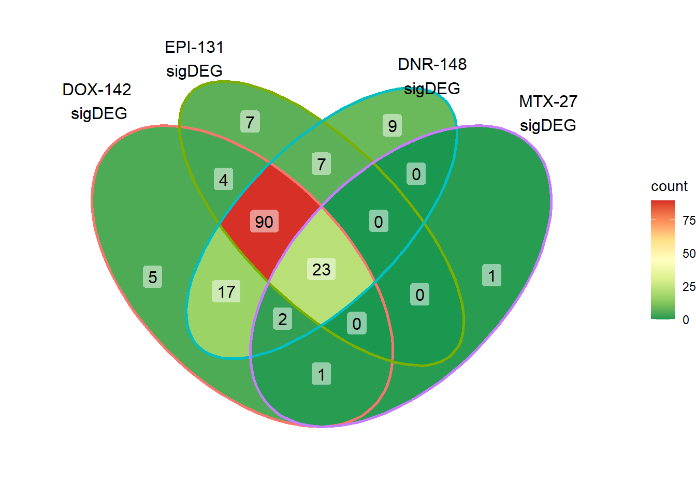 Here, I found 121 reQTLs that were related to all anthracyclines, with 31 reQTLS related to all Top2i drugs at 24 hours.
DOXeQTL_table <- toplistall %>%
mutate(sigcount = if_else(adj.P.Val < 0.05,'sig','notsig'))%>%
mutate(DOXreQTLs=if_else(ENTREZID %in%DOXreQTLs$ENTREZID,"y","no")) %>%
dplyr::filter(time =="24_hours") %>%
dplyr::select(ENTREZID,id,DOXreQTLs,sigcount) %>%
group_by(id,DOXreQTLs,sigcount) %>%
tally() %>% as.data.frame() %>%
pivot_wider(.,id_cols = c(id,DOXreQTLs),names_from = sigcount,values_from = n) %>%
dplyr::select(id,DOXreQTLs,sig)
DOXeQTL_table%>%
kable(., caption= "All 24 hour sigDEGs broken down by drug and DOXreQTL status") %>%
kable_paper("striped", full_width = FALSE) %>%
kable_styling(full_width = FALSE, position = "left",bootstrap_options = c("striped"),font_size = 18) %>%
scroll_box(width = "80%", height = "400px")| id | DOXreQTLs | sig |
|---|---|---|
| Daunorubicin | no | 6843 |
| Daunorubicin | y | 174 |
| Doxorubicin | no | 6459 |
| Doxorubicin | y | 186 |
| Epirubicin | no | 6170 |
| Epirubicin | y | 158 |
| Mitoxantrone | no | 1081 |
| Mitoxantrone | y | 34 |
| Trastuzumab | no | NA |
| Trastuzumab | y | NA |
DOXeQTL_table %>%
add_row(id=c("Dox-specific DEGs","Dox-specific DEGs"),DOXreQTLs=c("no","y"), sig = c(62,1)) %>%
dplyr::filter(DOXreQTLs=="y") %>%
mutate(opp= 180-sig) %>%
filter(id !=c('Trastuzumab','Doxorubicin')) %>%
rename("yes"=sig, "no"=opp) %>%
mutate(y_percent= paste0(sprintf("%2.1f", yes/(yes+no)*100), "%"),n_percent = paste0(sprintf("%2.1f", no/(yes+no)*100),"%")) %>%
pivot_longer(!c(id,DOXreQTLs,y_percent,n_percent), names_to="group", values_to = "count") %>%
mutate(id=factor(id, levels=c("Daunorubicin","Epirubicin", "Mitoxantrone","Dox-specific DEGs"))) %>%
ggplot(., aes(y=id,x=count,fill=group))+
geom_col(position='fill')+
theme_classic()+
scale_color_manual(values=c("red4","navy"))+
scale_fill_manual(values=c("#2297E6","red2"))+
ggtitle("DOXreQTLs overlaps")+
scale_y_discrete(limits=rev)+
geom_text(aes(y=id,x=1, label = n_percent,hjust=.8))+
theme(plot.title = element_text(size = rel(1.5), hjust = 0.5),
axis.title = element_text(size = 15, color = "black"),
axis.ticks = element_line(linewidth = 1.0),
axis.line = element_line(linewidth = 1.0),
axis.text = element_text(size = 10, color = "black", angle = 0),
strip.text.x = element_text(size = 15, color = "black", face = "bold"))
DOX specific-Dox dE-reqtl
# DoxonlyQTL <- as.numeric(QTLoverlaps$..values..[[14]])
# geneDoxonlyQTL <- getBM(attributes=my_attributes,filters ='entrezgene_id',
# values =DoxonlyQTL, mart = ensembl)
# write.csv(geneDoxonlyQTL,"data/geneDoxonlyQTL.csv")
geneDoxonlyQTL <- read.csv("data/geneDoxonlyQTL.csv",row.names = 1)
cpmcounts <- readRDS("data/cpmcount.RDS")
for (g in seq(from=1, to=length(geneDoxonlyQTL$entrezgene_id))){
a <- geneDoxonlyQTL$hgnc_symbol[g]
cpm_boxplot(cpmcounts,GOI=geneDoxonlyQTL[g,1],"Dark2",drug_palc,
ylab=bquote(~italic(.(a))~log[2]~"cpm "))
}


 ### Dox specific DEG examination
### Dox specific DEG examination
#pull list
total24 <-list(sigVDA24$ENTREZID,sigVDX24$ENTREZID,sigVEP24$ENTREZID,sigVMT24$ENTREZID)
## do venn partition and pull doxspe genes
# total24 <- list(sigVDA24$SYMBOL,sigVDX24$SYMBOL,sigVEP24$SYMBOL,sigVMT24$SYMBOL)
venn_24h <- VennDiagram::get.venn.partitions(total24)
DoxonlyDEG <- venn_24h$..values..[[14]]
EpionlyDEG <- venn_24h$..values..[[12]]
DnronlyDEG <- venn_24h$..values..[[15]]
MtxonlyDEG <- venn_24h$..values..[[8]]
intersect(DoxonlyDEG,DOXreQTLs$ENTREZID)[1] "57338" "29097" "7027" "10179" "9852" Dox24_lfc <- toplist24hr %>%
filter(ENTREZID %in% DoxonlyDEG) %>%
# group_by(id) %>%
# dplyr::filter(adj.P.Val<0.05) #%>%
mutate(logFC=logFC*(-1)) %>%
ggplot(., aes(x= id, y=logFC))+
geom_boxplot(aes(fill=id))+
theme_classic()+
fill_palette(palette = drug_palNoVeh)+
ggtitle("LogFC of Dox specific DEGs")+
theme(
plot.title = element_text(size = rel(1.5), hjust = 0.5,face = "bold"),
axis.title = element_text(size = 15, color = "black"),
axis.ticks = element_line(size = 1.5),
axis.text = element_text(size = 8, color = "black", angle = 20))
# strip.text.x = element_text(size = 12, color = "black", face = "italic"))
toplist24hr %>%
# filter(ENTREZID %in% DOXdeg_sp$ENTREZID) %>%
filter(adj.P.Val<0.05) %>%
ggplot(., aes(x=adj.P.Val))+
geom_histogram(aes(fill=id,position="dodge"))+
# geom_density(aes(fill=id))+
facet_wrap(~id)+
fill_palette(palette = drug_palNoVeh)
toplist24hr %>%
dplyr::filter(ENTREZID %in% DoxonlyDEG) %>%
ggplot(., aes(x=adj.P.Val))+
geom_density(aes(fill=id, alpha= 0.8))+
fill_palette(palette = drug_palNoVeh)
print(Dox24_lfc)
Plots of some genes:
### making list
#
# Doxonly_deg <- getBM(attributes=my_attributes,filters ='entrezgene_id',
# values =DoxonlyDEG, mart = ensembl)
# write.csv(Doxonly_deg,"output/Doxonly_deg.csv")
Doxonly_deg <- read.csv("output/Doxonly_deg.csv", row.names = 1)
set.seed(12345)
sampset <- Doxonly_deg %>%
distinct(entrezgene_id,.keep_all = TRUE) %>%
sample_n(.,12)
for (g in seq(from=1, to=length(sampset$entrezgene_id))){
a <- sampset$hgnc_symbol[g]
cpm_boxplot(cpmcounts,GOI=sampset[g,1],"Dark2",drug_palc,
ylab=bquote(~italic(.(a))~log[2]~"cpm "))
}


More investigation of 24 hour specific genes
Doxorubicin
DOXdeg_sp <- toplist24hr %>%
dplyr::filter(ENTREZID %in% DoxonlyDEG) %>%
dplyr::filter(adj.P.Val<0.01) %>%
filter(id=="Doxorubicin") %>%
dplyr::select(ENTREZID, SYMBOL)
DOXdeg_sp %>%
kable(., caption= "68 DOX specific genes") %>%
kable_paper("striped", full_width = TRUE) %>%
kable_styling(full_width = FALSE, font_size = 16) %>%
scroll_box( height = "500px")| ENTREZID | SYMBOL | |
|---|---|---|
| 169200 | 169200 | TMEM64 |
| 1452 | 1452 | CSNK1A1 |
| 653082 | 653082 | ZDHHC11B |
| 202181 | 202181 | LOC202181 |
| 8501 | 8501 | SLC43A1 |
| 114882 | 114882 | OSBPL8 |
| 23108 | 23108 | RAP1GAP2 |
| 135154 | 135154 | SDHAF4 |
| 5000 | 5000 | ORC4 |
| 2130 | 2130 | EWSR1 |
| 122553 | 122553 | TRAPPC6B |
| 54165 | 54165 | DCUN1D1 |
| 57862 | 57862 | ZNF410 |
| 57181 | 57181 | SLC39A10 |
| 112858 | 112858 | TP53RK |
| 79065 | 79065 | ATG9A |
| 8515 | 8515 | ITGA10 |
| 25842 | 25842 | ASF1A |
| 284900 | 284900 | TTC28-AS1 |
| 2230 | 2230 | FDX1 |
| 9524 | 9524 | TECR |
| 256586 | 256586 | LYSMD2 |
| 57338 | 57338 | JPH3 |
| 440944 | 440944 | THUMPD3-AS1 |
| 10190 | 10190 | TXNDC9 |
| 805 | 805 | CALM2 |
| 100131211 | 100131211 | NEMP2 |
| 4987 | 4987 | OPRL1 |
| 79624 | 79624 | ARMT1 |
| 23548 | 23548 | TTC33 |
| 27430 | 27430 | MAT2B |
| 81532 | 81532 | MOB2 |
| 158234 | 158234 | TRMT10B |
| 147 | 147 | ADRA1B |
| 26001 | 26001 | RNF167 |
| 57186 | 57186 | RALGAPA2 |
| 5431 | 5431 | POLR2B |
| 8763 | 8763 | CD164 |
| 55234 | 55234 | SMU1 |
| 84752 | 84752 | B3GNT9 |
| 375056 | 375056 | MIA3 |
| 7917 | 7917 | BAG6 |
| 54629 | 54629 | MINDY2 |
| 102723508 | 102723508 | KANTR |
| 26994 | 26994 | RNF11 |
| 29944 | 29944 | PNMA3 |
| 9446 | 9446 | GSTO1 |
| 7881 | 7881 | KCNAB1 |
| 6139 | 6139 | RPL17 |
| 100133331 | 100133331 | NA |
| 101927720 | 101927720 | ZNF793-AS1 |
| 6653 | 6653 | SORL1 |
| 5966 | 5966 | REL |
| 5411 | 5411 | PNN |
| 6498 | 6498 | SKIL |
| 8218 | 8218 | CLTCL1 |
| 83695 | 83695 | RHNO1 |
| 1838 | 1838 | DTNB |
| 347918 | 347918 | EP400P1 |
| 9894 | 9894 | TELO2 |
| 10973 | 10973 | ASCC3 |
| 5598 | 5598 | MAPK7 |
| 8241 | 8241 | RBM10 |
| 27229 | 27229 | TUBGCP4 |
| 2281 | 2281 | FKBP1B |
| 116068 | 116068 | LYSMD3 |
| 56998 | 56998 | CTNNBIP1 |
| 2551 | 2551 | GABPA |
intersect(DOXreQTLs$ENTREZID, DOXdeg_sp$ENTREZID)[1] "57338"##lfc
toplist24hr %>%
group_by(time,id) %>%
dplyr::filter(ENTREZID %in% DOXdeg_sp$ENTREZID) %>%
mutate(logFC=logFC*(-1)) %>%
ggplot(., aes(x= id, y=logFC))+
geom_boxplot(aes(fill=id))+
theme_classic()+
fill_palette(palette = drug_palNoVeh)+
ggtitle("LogFC of n = 68 Dox specific DEGs")+
theme(
plot.title = element_text(size = rel(1.5), hjust = 0.5,face = "bold"),
axis.title = element_text(size = 15, color = "black"),
axis.ticks = element_line(size = 1.5),
axis.text = element_text(size = 8, color = "black", angle = 20))
##histo check
toplist24hr %>%
dplyr::filter(ENTREZID %in% DOXdeg_sp$ENTREZID) %>%
dplyr::filter(adj.P.Val <0.05) %>%
ggplot(., aes(x=adj.P.Val))+
geom_histogram(aes(fill=id))+
geom_vline(xintercept=0.01,linetype=2)+
# geom_density(aes(fill=id))+
facet_wrap(~id)+
ggtitle("all Dox specific DEG adj p. value <0.01")+
fill_palette(palette = drug_palNoVeh)+
theme_bw()
toplist24hr %>%
filter(ENTREZID %in% DoxonlyDEG) %>%
ggplot(., aes(x=adj.P.Val))+
geom_density(aes(fill=id, alpha= 0.8))+
fill_palette(palette = drug_palNoVeh)+
theme_bw()
densityDOXsp <- toplist24hr %>%
filter(ENTREZID %in% DoxonlyDEG) %>%
ggplot(., aes(x=adj.P.Val))+
geom_density(aes(fill=id, alpha= 0.8))+
fill_palette(palette = drug_palNoVeh)+
theme_bw()
densityDOXsp
set.seed(12345)
sampset <- DOXdeg_sp %>%
sample_n(.,12)
for (g in seq(from=1, to=length(sampset$ENTREZID))){
a <- sampset$SYMBOL[g]
cpm_boxplot(cpmcounts,GOI=sampset[g,1],"Dark2",drug_palc,
ylab=bquote(~italic(.(a))~log[2]~"cpm "))
}


##most convincing of these is ZNF793-AS1 101927720Mitoxantrone
MTXdeg_sp <- toplist24hr %>%
dplyr::filter(ENTREZID %in% MtxonlyDEG) %>%
dplyr::filter(adj.P.Val<0.01) %>%
filter(id=="Mitoxantrone") %>%
dplyr::select(ENTREZID, SYMBOL)
MTXdeg_sp %>%
kable(., caption= "MTX specific genes") %>%
kable_paper("striped", full_width = TRUE) %>%
kable_styling(full_width = FALSE, font_size = 16) %>%
scroll_box( height = "500px")| ENTREZID | SYMBOL | |
|---|---|---|
| 25894 | 25894 | PLEKHG4 |
| 253714 | 253714 | MMS22L |
| 126432 | 126432 | RINL |
| 4001 | 4001 | LMNB1 |
| 6240 | 6240 | RRM1 |
| 83879 | 83879 | CDCA7 |
| 25886 | 25886 | POC1A |
| 100128191 | 100128191 | TMPO-AS1 |
| 84892 | 84892 | POMGNT2 |
| 27346 | 27346 | TMEM97 |
| 63827 | 63827 | BCAN |
| 55723 | 55723 | ASF1B |
| 4173 | 4173 | MCM4 |
| 54853 | 54853 | WDR55 |
| 8317 | 8317 | CDC7 |
| 57699 | 57699 | CPNE5 |
| 655 | 655 | BMP7 |
| 9401 | 9401 | RECQL4 |
| 126382 | 126382 | NR2C2AP |
| 79109 | 79109 | MAPKAP1 |
| 441478 | 441478 | NRARP |
| 22950 | 22950 | SLC4A1AP |
| 100996573 | 100996573 | NA |
| 55780 | 55780 | ERMARD |
| 3148 | 3148 | HMGB2 |
| 3983 | 3983 | ABLIM1 |
| 9134 | 9134 | CCNE2 |
| 25981 | 25981 | DNAH1 |
| 9811 | 9811 | CTIF |
| 56970 | 56970 | ATXN7L3 |
| 79758 | 79758 | DHRS12 |
| 55147 | 55147 | RBM23 |
| 65057 | 65057 | ACD |
| 645954 | 645954 | SVIL2P |
| 64116 | 64116 | SLC39A8 |
| 147645 | 147645 | VSIG10L |
| 23582 | 23582 | CCNDBP1 |
| 8321 | 8321 | FZD1 |
| 10432 | 10432 | RBM14 |
| 9820 | 9820 | CUL7 |
| 55706 | 55706 | NDC1 |
#intersect(DOXreQTLs$ENTREZID, MTXdeg_sp$ENTREZID)#none
##lfc
toplist24hr %>%
group_by(time,id) %>%
filter(ENTREZID %in% MtxonlyDEG) %>%
mutate(logFC=logFC*(-1)) %>%
mutate(treatment =case_match( id,
'Daunorubicin'~'DNR',
'Doxorubicin'~'DOX' ,
'Epirubicin'~'EPI' ,
'Mitoxantrone' ~ 'MTX',
'Trastuzumab'~ 'TRX', .default = id)) %>%
ggplot(., aes(x= treatment, y=logFC))+
geom_boxplot(aes(fill=id))+
xlab(" ")+
theme_classic()+
fill_palette(palette = drug_palNoVeh)+
ggtitle("LogFC of MTX specific DEGs (n = 48)")+
theme(
plot.title = element_text(size = rel(1.5), hjust = 0.5,face = "bold"),
axis.title = element_text(size = 15, color = "black"),
axis.ticks = element_line(size = 1.5),
axis.text = element_text(size = 8, color = "black", angle = 0))
##histo check
toplist24hr %>%
dplyr::filter(ENTREZID %in% MTXdeg_sp$ENTREZID) %>%
dplyr::filter(adj.P.Val <0.05) %>%
ggplot(., aes(x=adj.P.Val))+
geom_histogram(aes(fill=id))+
geom_vline(xintercept=0.01,linetype=2)+
# geom_density(aes(fill=id))+
facet_wrap(~id)+
ggtitle("all MTX specific DEG adj p. value <0.01")+
fill_palette(palette = drug_palNoVeh)+
theme_bw()toplist24hr %>%
filter(ENTREZID %in% MtxonlyDEG) %>%
ggplot(., aes(x=adj.P.Val))+
geom_density(aes(fill=id, alpha= 0.8))+
fill_palette(palette = drug_palNoVeh)+
theme_bw()
densityMTXsp <- toplist24hr %>%
filter(ENTREZID %in% MtxonlyDEG) %>%
ggplot(., aes(x=adj.P.Val))+
geom_density(aes(fill=id, alpha= 0.8))+
fill_palette(palette = drug_palNoVeh)+
theme_bw()
densityMTXsp
set.seed(12345)
sampset <- MTXdeg_sp %>%
sample_n(.,12)
for (g in seq(from=1, to=length(sampset$ENTREZID))){
a <- sampset$SYMBOL[g]
cpm_boxplot(cpmcounts,GOI=sampset[g,1],"Dark2",drug_palc,
ylab=bquote(~italic(.(a))~log[2]~"cpm "))
} 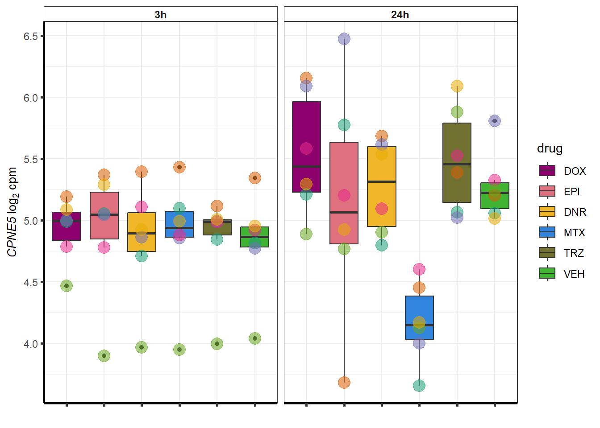
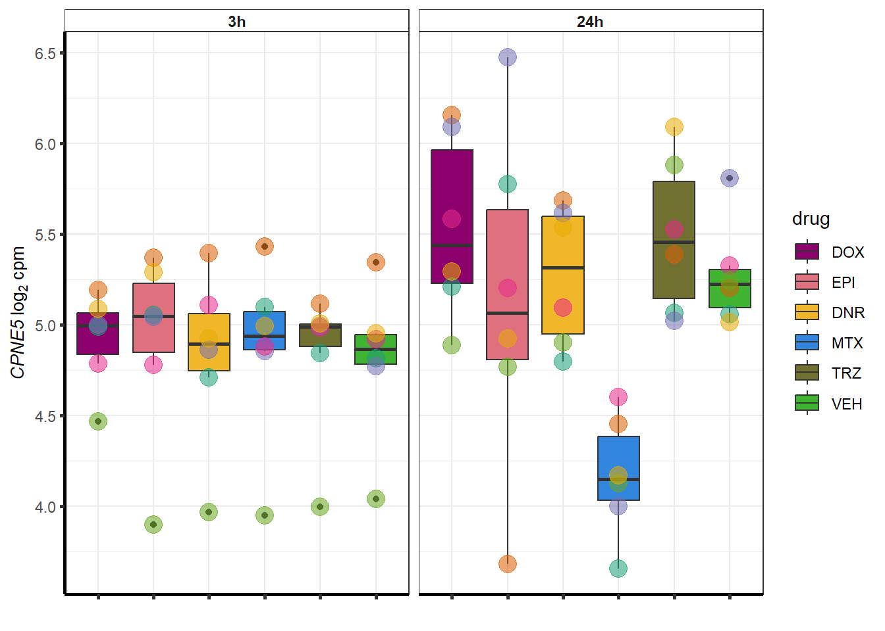 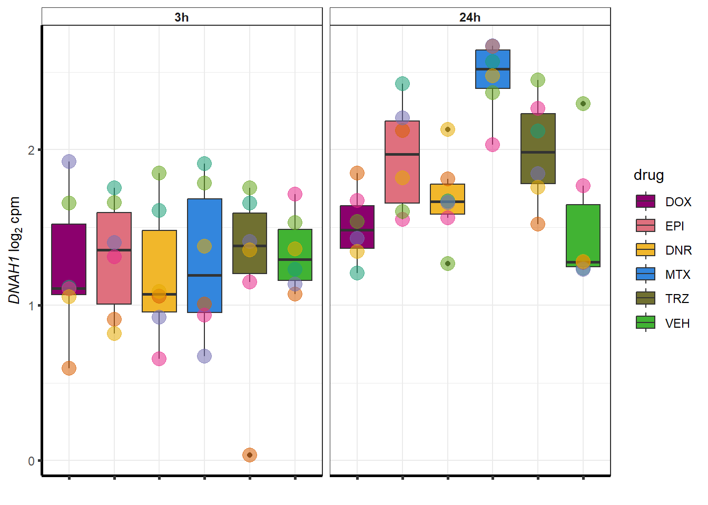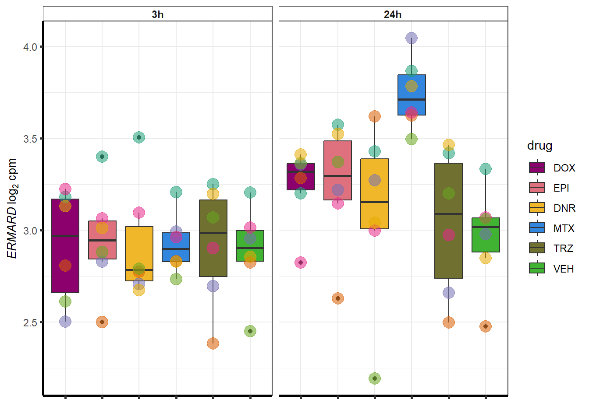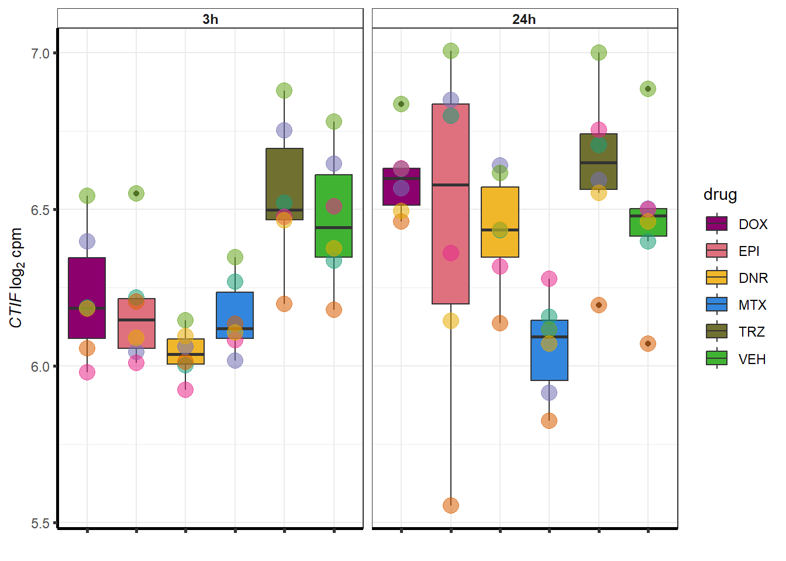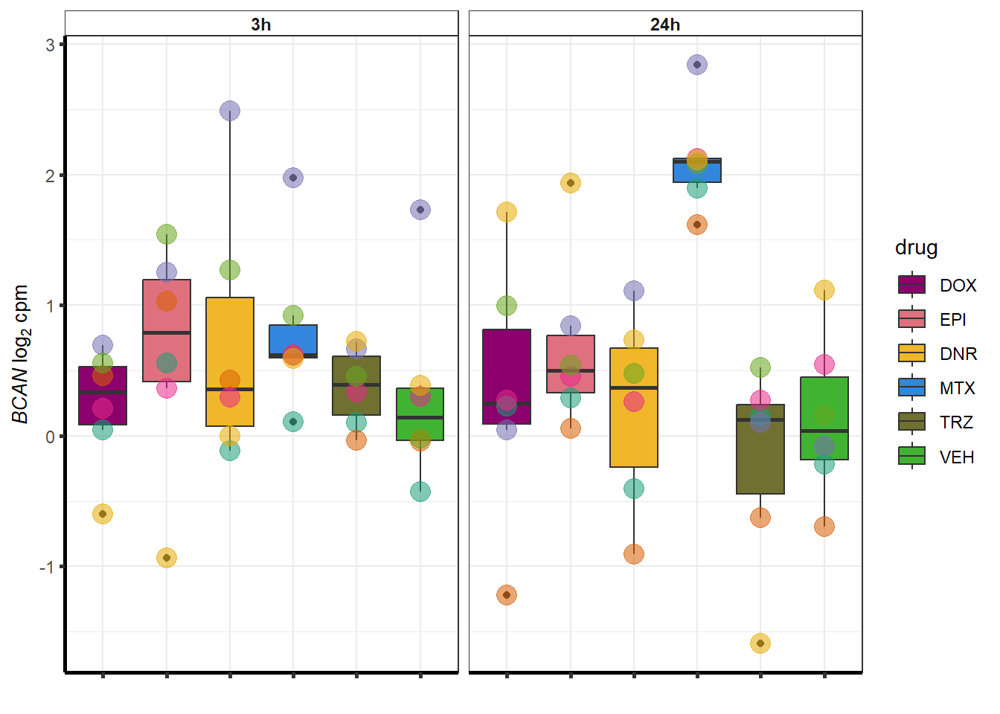
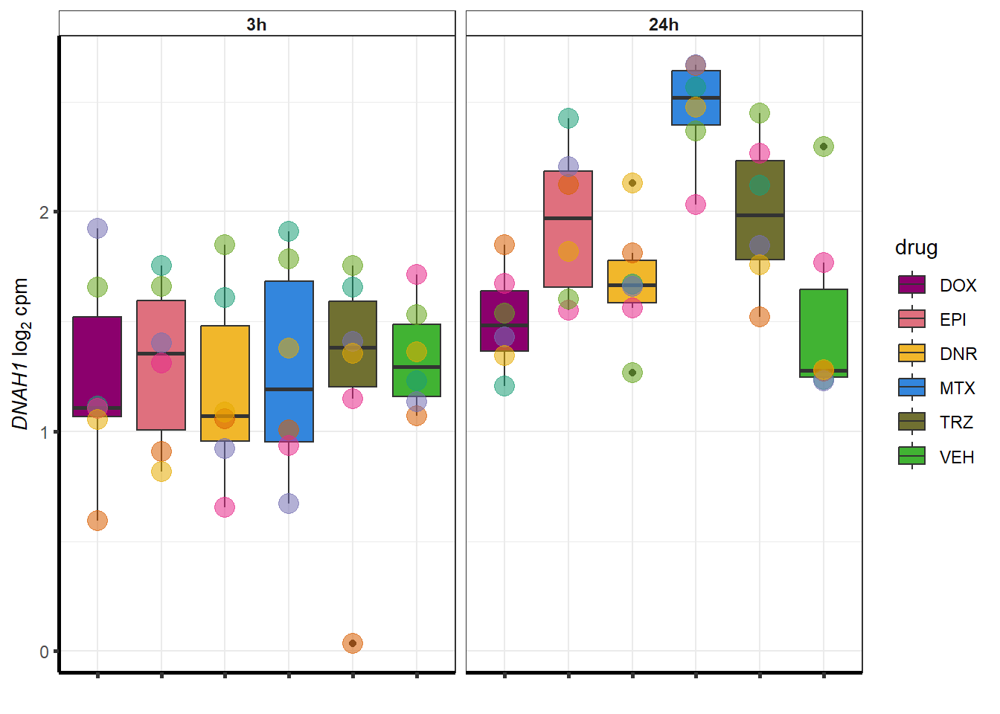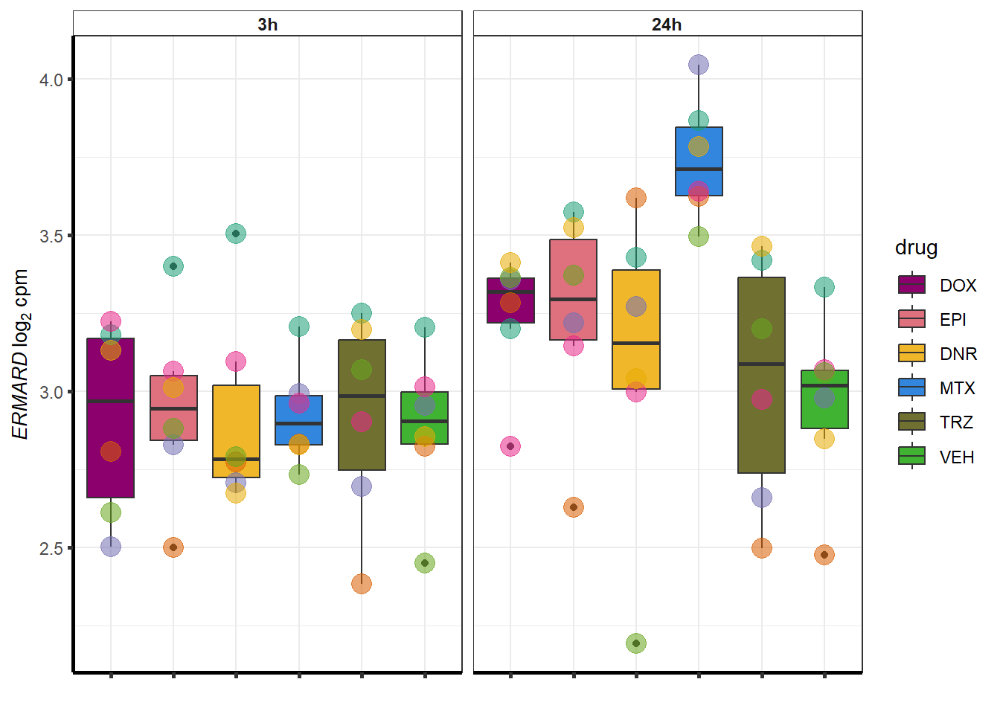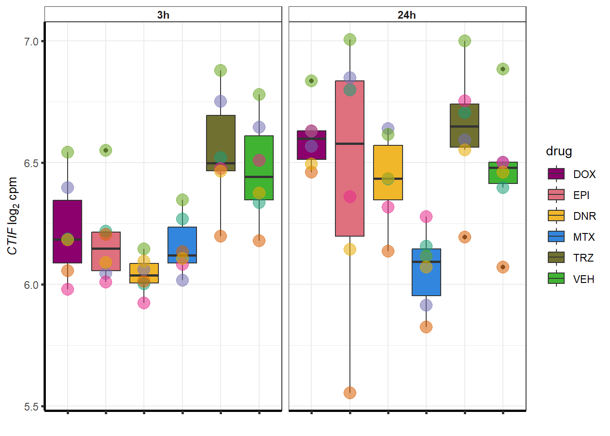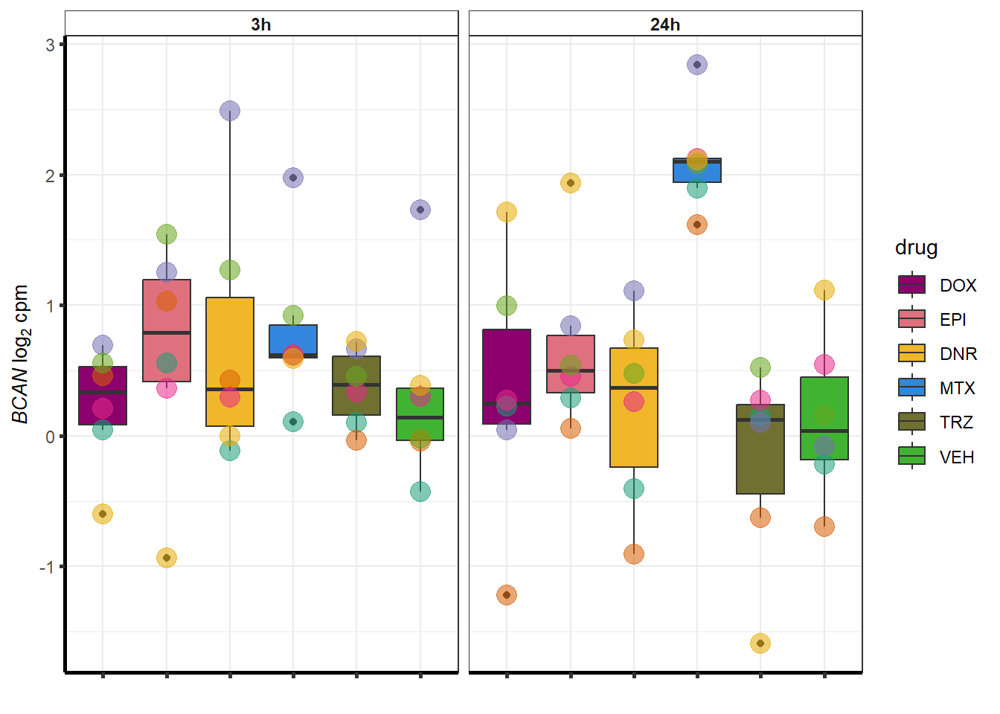

 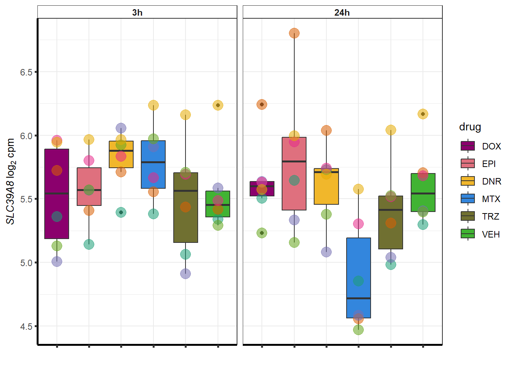
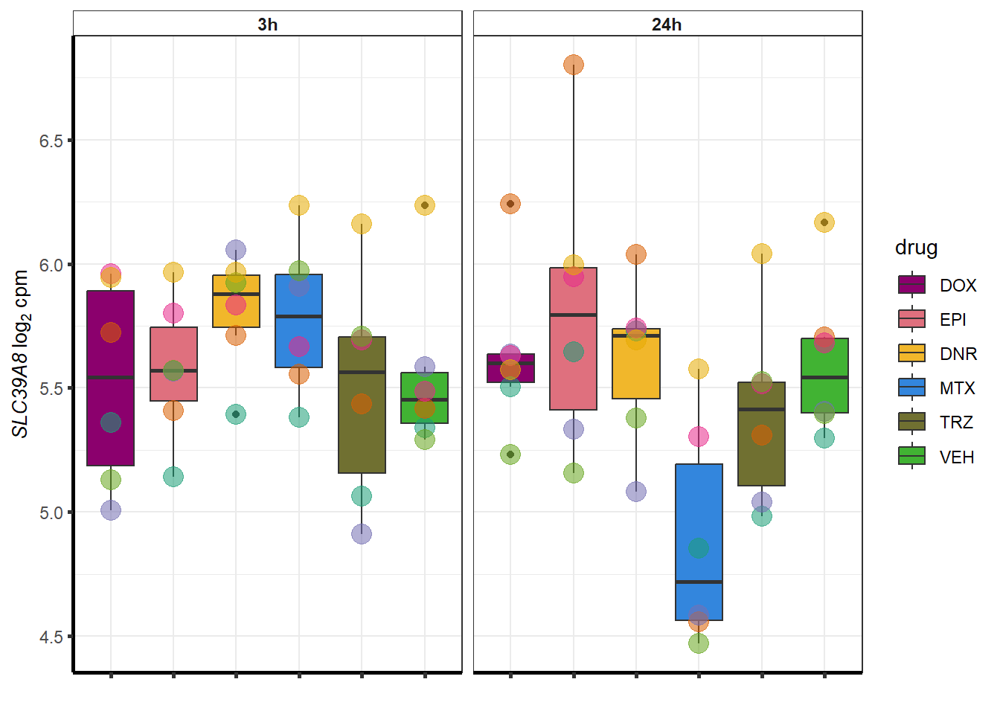
##most convincing of these is 54853 WDR55 Daunorubicin
DNRdeg_sp <- toplist24hr %>%
filter(adj.P.Val<0.01) %>%
filter(ENTREZID %in% DnronlyDEG) %>%
filter(id=="Daunorubicin") %>%
dplyr::select(ENTREZID, SYMBOL)
##lfc
toplist24hr %>%
filter(ENTREZID %in% DNRdeg_sp$ENTREZID) %>%
group_by(time,id) %>%
mutate(logFC=logFC*(-1)) %>%
mutate(treatment =case_match( id,
'Daunorubicin'~'DNR',
'Doxorubicin'~'DOX' ,
'Epirubicin'~'EPI' ,
'Mitoxantrone' ~ 'MTX',
'Trastuzumab'~ 'TRX', .default = id)) %>%
ggplot(., aes(x= treatment, y=logFC))+
geom_boxplot(aes(fill=id))+
xlab(" ")+
theme_classic()+
fill_palette(palette = drug_palNoVeh)+
ggtitle("LogFC of DNR specific DEGs (n = 112)")+
theme(
plot.title = element_text(size = rel(1.5), hjust = 0.5,face = "bold"),
axis.title = element_text(size = 15, color = "black"),
axis.ticks = element_line(size = 1.5),
axis.text = element_text(size = 8, color = "black", angle = 0))
##histo check
toplist24hr %>%
dplyr::filter(ENTREZID %in% DNRdeg_sp$ENTREZID) %>%
dplyr::filter(adj.P.Val <0.05) %>%
ggplot(., aes(x=adj.P.Val))+
geom_histogram(aes(fill=id))+
geom_vline(xintercept=0.01,linetype=2)+
# geom_density(aes(fill=id))+
facet_wrap(~id)+
ggtitle("all DNR specific DEG adj p. value <0.01")+
fill_palette(palette = drug_palNoVeh)+
theme_bw()
toplist24hr %>%
filter(ENTREZID %in% DnronlyDEG) %>%
ggplot(., aes(x=adj.P.Val))+
geom_density(aes(fill=id, alpha= 0.8))+
fill_palette(palette = drug_palNoVeh)+
theme_bw()
set.seed(12345)
sampset <- DNRdeg_sp %>%
sample_n(.,12)
for (g in seq(from=1, to=length(sampset$ENTREZID))){
a <- sampset$SYMBOL[g]
cpm_boxplot(cpmcounts,GOI=sampset[g,1],"Dark2",drug_palc,
ylab=bquote(~italic(.(a))~log[2]~"cpm "))
}


##most convincing of these is 114826 SMYD4Epirubicin
EPIdeg_sp <- toplist24hr %>%
filter(adj.P.Val<0.01) %>%
filter(ENTREZID %in% EpionlyDEG) %>%
filter(id=="Epirubicin") %>%
dplyr::select(ENTREZID, SYMBOL)
EPIdeg_sp %>%
kable(., caption= "EPI specific genes") %>%
kable_paper("striped", full_width = TRUE) %>%
kable_styling(full_width = FALSE, font_size = 16) %>%
scroll_box( height = "500px")| ENTREZID | SYMBOL | |
|---|---|---|
| 9685 | 9685 | CLINT1 |
| 9373 | 9373 | PLAA |
| 55006 | 55006 | TRMT61B |
| 79798 | 79798 | ARMC5 |
| 79759 | 79759 | ZNF668 |
| 51434 | 51434 | ANAPC7 |
| 54508 | 54508 | EPB41L4A-DT |
| 92140 | 92140 | MTDH |
| 11097 | 11097 | NUP42 |
| 64781 | 64781 | CERK |
| 57587 | 57587 | CFAP97 |
| 57325 | 57325 | KAT14 |
| 201627 | 201627 | DENND6A |
| 55702 | 55702 | YJU2 |
| 51132 | 51132 | RLIM |
| 55105 | 55105 | GPATCH2 |
| 64863 | 64863 | METTL4 |
| 90864 | 90864 | SPSB3 |
| 8624 | 8624 | PSMG1 |
| 60561 | 60561 | RINT1 |
| 56252 | 56252 | YLPM1 |
| 55339 | 55339 | WDR33 |
| 23086 | 23086 | EXPH5 |
| 1938 | 1938 | EEF2 |
| 493812 | 493812 | HCG11 |
| 7110 | 7110 | TMF1 |
| 83852 | 83852 | SETDB2 |
| 5884 | 5884 | RAD17 |
| 64860 | 64860 | ARMCX5 |
| 220963 | 220963 | SLC16A9 |
| 22796 | 22796 | COG2 |
| 11232 | 11232 | POLG2 |
| 1385 | 1385 | CREB1 |
| 10111 | 10111 | RAD50 |
| 10342 | 10342 | TFG |
| 57609 | 57609 | DIP2B |
| 55727 | 55727 | BTBD7 |
| 2043 | 2043 | EPHA4 |
| 339210 | 339210 | C17orf67 |
| 9972 | 9972 | NUP153 |
| 285636 | 285636 | RIMOC1 |
| 54942 | 54942 | ABITRAM |
| 143282 | 143282 | FGFBP3 |
| 340359 | 340359 | KLHL38 |
| 339122 | 339122 | RAB43 |
| 79038 | 79038 | ZFYVE21 |
| 5533 | 5533 | PPP3CC |
| 2966 | 2966 | GTF2H2 |
| 105371932 | 105371932 | LOC105371932 |
| 55223 | 55223 | TRIM62 |
| 84967 | 84967 | LSM10 |
| 7592 | 7592 | ZNF41 |
| 11282 | 11282 | MGAT4B |
| 7869 | 7869 | SEMA3B |
| 65260 | 65260 | COA7 |
| 9967 | 9967 | THRAP3 |
| 10240 | 10240 | MRPS31 |
| 130507 | 130507 | UBR3 |
| 9829 | 9829 | DNAJC6 |
| 349136 | 349136 | WDR86 |
| 55676 | 55676 | SLC30A6 |
| 64844 | 64844 | MARCHF7 |
| 23122 | 23122 | CLASP2 |
| 26046 | 26046 | LTN1 |
| 138241 | 138241 | C9orf85 |
| 10021 | 10021 | HCN4 |
| 84859 | 84859 | LRCH3 |
| 85457 | 85457 | CIPC |
| 79713 | 79713 | IGFLR1 |
| 79657 | 79657 | RPAP3 |
| 5887 | 5887 | RAD23B |
| 8899 | 8899 | PRPF4B |
| 54904 | 54904 | NSD3 |
| 27246 | 27246 | RNF115 |
| 23064 | 23064 | SETX |
| 6897 | 6897 | TARS1 |
| 55937 | 55937 | APOM |
| 79230 | 79230 | ZNF557 |
| 11054 | 11054 | OGFR |
| 1032 | 1032 | CDKN2D |
| 55958 | 55958 | KLHL9 |
| 5048 | 5048 | PAFAH1B1 |
| 728229 | 728229 | TMEM191B |
| 80176 | 80176 | SPSB1 |
##lfc
toplist24hr %>%
filter(ENTREZID %in% EPIdeg_sp$ENTREZID) %>%
group_by(time,id) %>%
mutate(logFC=logFC*(-1)) %>%
mutate(treatment =case_match( id,
'Daunorubicin'~'DNR',
'Doxorubicin'~'DOX' ,
'Epirubicin'~'EPI' ,
'Mitoxantrone' ~ 'MTX',
'Trastuzumab'~ 'TRX', .default = id)) %>%
ggplot(., aes(x= treatment, y=logFC))+
geom_boxplot(aes(fill=id))+
xlab(" ")+
theme_classic()+
fill_palette(palette = drug_palNoVeh)+
ggtitle("LogFC of EPI specific DEGs (n = 84) ")+
theme(
plot.title = element_text(size = rel(1.5), hjust = 0.5,face = "bold"),
axis.title = element_text(size = 15, color = "black"),
axis.ticks = element_line(size = 1.5),
axis.text = element_text(size = 8, color = "black", angle = 0))
##histo check
toplist24hr %>%
dplyr::filter(ENTREZID %in% EPIdeg_sp$ENTREZID) %>%
dplyr::filter(adj.P.Val <0.05) %>%
ggplot(., aes(x=adj.P.Val))+
geom_histogram(aes(fill=id))+
geom_vline(xintercept=0.01,linetype=2)+
# geom_density(aes(fill=id))+
facet_wrap(~id)+
ggtitle("all DNR specific DEG adj p. value <0.01")+
fill_palette(palette = drug_palNoVeh)+
theme_bw()
densityEPIsp <- toplist24hr %>%
filter(ENTREZID %in% EpionlyDEG) %>%
ggplot(., aes(x=adj.P.Val))+
geom_density(aes(fill=id, alpha= 0.8))+
fill_palette(palette = drug_palNoVeh)+
theme_bw()
densityEPIsp
set.seed(12345)
sampset <- EPIdeg_sp %>%
sample_n(.,12)
for (g in seq(from=1, to=length(sampset$ENTREZID))){
a <- sampset$SYMBOL[g]
cpm_boxplot(cpmcounts,GOI=sampset[g,1],"Dark2",drug_palc,
ylab=bquote(~italic(.(a))~log[2]~"cpm "))
}


##most convincing of these is 220963 SLC16A9GO analysis
library(gprofiler2)
#
# DNRdeg_sp had NO enrichment
# EPIdeg_sp had NO enrichment
# MTXdeg_sep had 2, "DNA-templated DNA replication" "nuclear pore localization" "DNA replication"
# gostresDOXdeg_sp <- gost(query = c(DOXdeg_sp),
# organism = "hsapiens",
# ordered_query = FALSE,
# domain_scope = "custom",
# measure_underrepresentation = FALSE,
# evcodes = FALSE,
# user_threshold = 0.05,
# correction_method = c("fdr"),
# custom_bg = backGL$ENTREZID,
# sources=c("GO:BP", "KEGG"))
#
# saveRDS(gostresDOXdeg_sp,"data/DEG-GO/gostresDOXdeg_sp.RDS")
DX_sp_DEGgostres <- readRDS("data/DEG-GO/gostresDOXdeg_sp.RDS")
DX_spgenes <- gostplot(DX_sp_DEGgostres, capped = FALSE, interactive = TRUE)
DX_spgenesDX_sp_DEGtable <- DX_sp_DEGgostres$result %>%
dplyr::select(c(source, term_id,term_name,intersection_size,
term_size, p_value))
DX_sp_DEGtable %>%
dplyr::filter(source=="GO:BP") %>%
dplyr::select(p_value,term_name,intersection_size) %>%
slice_min(., n=10 ,order_by=p_value) %>%
mutate(log_val = -log10(p_value)) %>%
# slice_max(., n=10,order_by = p_value) %>%
ggplot(., aes(x = log_val, y =reorder(term_name,p_value), col= intersection_size)) +
geom_point(aes(size = intersection_size)) +
scale_y_discrete(labels = wrap_format(30))+
guides(col="none", size=guide_legend(title = "# of intersected \n terms"))+
ggtitle('DOX specific gene set GO:BP terms') +
xlab(expression(" -"~log[10]~("adj. p-value")))+
ylab("GO: BP term")+
theme_bw()+
theme(plot.title = element_text(size = rel(1.5), hjust = 0.5),
axis.title = element_text(size = 15, color = "black"),
axis.ticks = element_line(linewidth = 1.5),
axis.line = element_line(linewidth = 1.5),
axis.text = element_text(size = 10, color = "black", angle = 0),
strip.text.x = element_text(size = 15, color = "black", face = "bold"))
DX_sp_DEGtable %>%
mutate_at(.vars = 6, .funs= scientific_format()) %>%
kable(., caption= "Significant (adj. P value of <0.01) Doxorubicin specific genes (n = 68) and top 10 enriched GO terms") %>%
kable_paper("striped", full_width = FALSE) %>%
kable_styling(full_width = FALSE, position = "left",bootstrap_options = c("striped","hover")) %>%
scroll_box(width = "100%", height = "400px")| source | term_id | term_name | intersection_size | term_size | p_value |
|---|---|---|---|---|---|
| GO:BP | GO:2001258 | negative regulation of cation channel activity | 5 | 30 | 4.78e-04 |
| GO:BP | GO:0032413 | negative regulation of ion transmembrane transporter activity | 5 | 51 | 1.98e-03 |
| GO:BP | GO:1901020 | negative regulation of calcium ion transmembrane transporter activity | 4 | 27 | 1.98e-03 |
| GO:BP | GO:0060314 | regulation of ryanodine-sensitive calcium-release channel activity | 4 | 23 | 1.98e-03 |
| GO:BP | GO:0032410 | negative regulation of transporter activity | 5 | 58 | 1.98e-03 |
| GO:BP | GO:2001257 | regulation of cation channel activity | 6 | 100 | 1.98e-03 |
| GO:BP | GO:0034763 | negative regulation of transmembrane transport | 6 | 96 | 1.98e-03 |
| GO:BP | GO:0060315 | negative regulation of ryanodine-sensitive calcium-release channel activity | 3 | 10 | 2.51e-03 |
| GO:BP | GO:1904063 | negative regulation of cation transmembrane transport | 5 | 64 | 2.51e-03 |
| GO:BP | GO:0051280 | negative regulation of release of sequestered calcium ion into cytosol | 3 | 11 | 2.88e-03 |
| GO:BP | GO:1901019 | regulation of calcium ion transmembrane transporter activity | 5 | 71 | 2.95e-03 |
| GO:BP | GO:1903170 | negative regulation of calcium ion transmembrane transport | 4 | 35 | 2.95e-03 |
| GO:BP | GO:0034766 | negative regulation of monoatomic ion transmembrane transport | 5 | 70 | 2.95e-03 |
| GO:BP | GO:0051284 | positive regulation of sequestering of calcium ion | 3 | 13 | 3.54e-03 |
| GO:BP | GO:0051926 | negative regulation of calcium ion transport | 4 | 45 | 7.02e-03 |
| GO:BP | GO:0043271 | negative regulation of monoatomic ion transport | 5 | 90 | 7.39e-03 |
| GO:BP | GO:0034762 | regulation of transmembrane transport | 9 | 391 | 9.58e-03 |
| GO:BP | GO:0010881 | regulation of cardiac muscle contraction by regulation of the release of sequestered calcium ion | 3 | 20 | 1.07e-02 |
| GO:BP | GO:0051279 | regulation of release of sequestered calcium ion into cytosol | 4 | 60 | 1.72e-02 |
| GO:BP | GO:0010882 | regulation of cardiac muscle contraction by calcium ion signaling | 3 | 25 | 1.91e-02 |
| GO:BP | GO:1903169 | regulation of calcium ion transmembrane transport | 5 | 122 | 2.16e-02 |
| GO:BP | GO:0032412 | regulation of monoatomic ion transmembrane transporter activity | 6 | 190 | 2.16e-02 |
| GO:BP | GO:0010880 | regulation of release of sequestered calcium ion into cytosol by sarcoplasmic reticulum | 3 | 27 | 2.16e-02 |
| GO:BP | GO:1903514 | release of sequestered calcium ion into cytosol by endoplasmic reticulum | 3 | 28 | 2.16e-02 |
| GO:BP | GO:0014808 | release of sequestered calcium ion into cytosol by sarcoplasmic reticulum | 3 | 28 | 2.16e-02 |
| GO:BP | GO:0055117 | regulation of cardiac muscle contraction | 4 | 70 | 2.28e-02 |
| GO:BP | GO:0022898 | regulation of transmembrane transporter activity | 6 | 199 | 2.34e-02 |
| GO:BP | GO:0070296 | sarcoplasmic reticulum calcium ion transport | 3 | 31 | 2.62e-02 |
| GO:BP | GO:0032409 | regulation of transporter activity | 6 | 211 | 2.88e-02 |
| GO:BP | GO:0065009 | regulation of molecular function | 20 | 1939 | 2.88e-02 |
| GO:BP | GO:0051209 | release of sequestered calcium ion into cytosol | 4 | 82 | 3.49e-02 |
| GO:BP | GO:0051283 | negative regulation of sequestering of calcium ion | 4 | 83 | 3.54e-02 |
| GO:BP | GO:0006942 | regulation of striated muscle contraction | 4 | 85 | 3.65e-02 |
| GO:BP | GO:0051282 | regulation of sequestering of calcium ion | 4 | 85 | 3.65e-02 |
| GO:BP | GO:1904062 | regulation of monoatomic cation transmembrane transport | 6 | 230 | 3.78e-02 |
| GO:BP | GO:0060316 | positive regulation of ryanodine-sensitive calcium-release channel activity | 2 | 9 | 3.78e-02 |
| GO:BP | GO:0051208 | sequestering of calcium ion | 4 | 89 | 3.98e-02 |
| GO:BP | GO:0007204 | positive regulation of cytosolic calcium ion concentration | 4 | 90 | 4.04e-02 |
| GO:BP | GO:0051342 | regulation of cyclic-nucleotide phosphodiesterase activity | 2 | 10 | 4.35e-02 |
| GO:BP | GO:2001258 | negative regulation of cation channel activity | 4 | 30 | 1.88e-02 |
| GO:BP | GO:2001257 | regulation of cation channel activity | 5 | 100 | 4.45e-02 |
| GO:BP | GO:0032413 | negative regulation of ion transmembrane transporter activity | 4 | 51 | 4.45e-02 |
| GO:BP | GO:0034763 | negative regulation of transmembrane transport | 5 | 96 | 4.45e-02 |
| GO:BP | GO:0032410 | negative regulation of transporter activity | 4 | 58 | 4.63e-02 |
| GO:BP | GO:0060314 | regulation of ryanodine-sensitive calcium-release channel activity | 3 | 23 | 4.63e-02 |
Grid for supplement


sessionInfo()R version 4.2.2 (2022-10-31 ucrt)
Platform: x86_64-w64-mingw32/x64 (64-bit)
Running under: Windows 10 x64 (build 19045)
Matrix products: default
locale:
[1] LC_COLLATE=English_United States.utf8
[2] LC_CTYPE=English_United States.utf8
[3] LC_MONETARY=English_United States.utf8
[4] LC_NUMERIC=C
[5] LC_TIME=English_United States.utf8
attached base packages:
[1] grid stats graphics grDevices utils datasets methods
[8] base
other attached packages:
[1] gprofiler2_0.2.2 ComplexHeatmap_2.12.1 broom_1.0.5
[4] kableExtra_1.3.4 sjmisc_2.8.9 scales_1.2.1
[7] ggpubr_0.6.0 cowplot_1.1.1 ggsignif_0.6.4
[10] lubridate_1.9.2 forcats_1.0.0 stringr_1.5.0
[13] dplyr_1.1.2 purrr_1.0.1 readr_2.1.4
[16] tidyr_1.3.0 tibble_3.2.1 ggplot2_3.4.2
[19] tidyverse_2.0.0 RColorBrewer_1.1-3 limma_3.52.4
[22] workflowr_1.7.0
loaded via a namespace (and not attached):
[1] ggVennDiagram_1.2.2 colorspace_2.1-0 rjson_0.2.21
[4] ellipsis_0.3.2 class_7.3-22 sjlabelled_1.2.0
[7] rprojroot_2.0.3 circlize_0.4.15 futile.logger_1.4.3
[10] GlobalOptions_0.1.2 fs_1.6.2 proxy_0.4-27
[13] clue_0.3-64 rstudioapi_0.14 farver_2.1.1
[16] fansi_1.0.4 xml2_1.3.4 codetools_0.2-19
[19] doParallel_1.0.17 cachem_1.0.8 knitr_1.43
[22] jsonlite_1.8.5 cluster_2.1.4 png_0.1-8
[25] shiny_1.7.4 compiler_4.2.2 httr_1.4.6
[28] backports_1.4.1 lazyeval_0.2.2 fastmap_1.1.1
[31] cli_3.6.1 later_1.3.1 formatR_1.14
[34] htmltools_0.5.5 tools_4.2.2 gtable_0.3.3
[37] glue_1.6.2 Rcpp_1.0.10 carData_3.0-5
[40] jquerylib_0.1.4 vctrs_0.6.3 svglite_2.1.1
[43] crosstalk_1.2.0 iterators_1.0.14 insight_0.19.2
[46] xfun_0.39 ps_1.7.5 rvest_1.0.3
[49] mime_0.12 timechange_0.2.0 lifecycle_1.0.3
[52] rstatix_0.7.2 getPass_0.2-2 hms_1.1.3
[55] promises_1.2.0.1 parallel_4.2.2 lambda.r_1.2.4
[58] yaml_2.3.7 sass_0.4.6 stringi_1.7.12
[61] highr_0.10 S4Vectors_0.34.0 foreach_1.5.2
[64] e1071_1.7-13 BiocGenerics_0.42.0 shape_1.4.6
[67] rlang_1.1.1 pkgconfig_2.0.3 systemfonts_1.0.4
[70] matrixStats_1.0.0 evaluate_0.21 sf_1.0-13
[73] htmlwidgets_1.6.2 labeling_0.4.2 processx_3.8.1
[76] tidyselect_1.2.0 magrittr_2.0.3 R6_2.5.1
[79] IRanges_2.30.1 generics_0.1.3 DBI_1.1.3
[82] pillar_1.9.0 whisker_0.4.1 withr_2.5.0
[85] units_0.8-2 abind_1.4-5 crayon_1.5.2
[88] car_3.1-2 futile.options_1.0.1 KernSmooth_2.23-21
[91] utf8_1.2.3 plotly_4.10.2 RVenn_1.1.0
[94] tzdb_0.4.0 rmarkdown_2.22 GetoptLong_1.0.5
[97] data.table_1.14.8 callr_3.7.3 git2r_0.32.0
[100] classInt_0.4-9 digest_0.6.31 webshot_0.5.4
[103] xtable_1.8-4 VennDiagram_1.7.3 httpuv_1.6.11
[106] stats4_4.2.2 munsell_0.5.0 viridisLite_0.4.2
[109] bslib_0.5.0